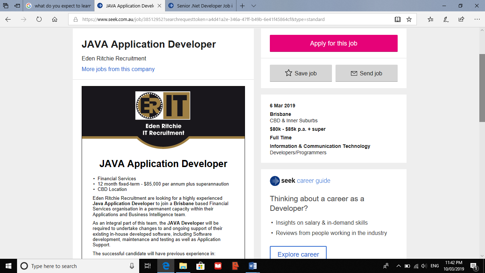

COSC2196
Introduction to Information Technology
Personal Information
Name: Niyatiben Jaymin Patel
Student No.: s3776106
Email: S3776106@student.rmit.edu.au
I have moved to Australia in 2013, and prior to that I was Indian citizen and was residing in India. I have recently become an Australian citizen. I am coming from Hindu culture. My outlook is modern, but I am equally grounded with my traditions. I have passed out Bachelor of Pharmacy from India in 2011 and recently enrolled in Introduction in IT course. I can speak and understand Gujarati, Hindi and English languages. I live my life with a positive and progressive outlook. I love to do some crafting work and play games with my son in free time. Cricket is one of my favorite sports. Music is remedy for my stress.
Interest in IT
What is your interest in IT? When did your interest in IT start? Was there a particular event or person that sparked your interest? Outline your IT experience (if any).
stern" style="margin-left: 0.25in; margin-bottom: 0in">
IT is all about the
computers and technologies that makes human efforts minimum. I was
always fascinated by computers. Computer is one of the most
innovative technologies by humans. Computers have made human life so
much easier. Developing apps and software is my main interest in IT.
My dad bought me a desktop when I was 6. I was used to watch my dad
work on the computer. I always wondered about all the parts of the
computers and how it was working. My brother is a computer engineer
and I would say he is the person that sparked my Interest in IT. I
have seen him working on the computer projects and I find them very
interesting. I started asking him more questions and I realize that
the IT field is very large, and it is nearly endless. So, I decided
to start my IT journey and switch the field from Pharmacy to IT.
Unfortunately, I have no work experience in IT field.
Why did you choose to come to RMIT?
When I decide to study IT, I search for a lot of different universities. But being a mother, I could only study as an external student. And I come across the RMIT University. I read the reviews, they were satisfying. I dig through more and I found that I can study as an external student from RMIT and I learnt that we will always have benefits of the online smart study throughout the course, and that made me to take more interest to study with RMIT. I have also heard that RMIT is one of the good Universities to study IT course, and so I chose RMIT.
What do you expect to learn during your studies?
I have very basic knowledge in IT. I expect to learn various parts of IT in depth and when I complete my study, I want to have Job ready skills, more confident and especially good in IT field. As I see myself as a future web or app developer, I expect to learn more and in depth in that particular part of IT.
Ideal Job
JAVA Application Developer

A Brisbane based financial service organization is looking for a Java application Developer to support their existing in-house developed software, including software development, maintenance, testing and application support. Interest in application development and working in the challenging work atmosphere appealed me to think that this position suits me well.
The qualification, skills and experience required for this position are:
At least 4 to 6 years of work experience in developing and supporting Java application.
Good communication skills and capable to work in busy environment
Very good problem-solving skills
Prioritizing skill, motivated and finish the work within deadline
Extensive experience with Spring Boot and Framework 4.x
Experience with Microsoft SQL server 2012+, Maven and other build/CI technologies
Experience with Eclipse CP, Swing or similar user interface development platforms
Experience with back-end server development, JMS/MQ technology, Web Services (REST, SOAP) and Microservices
Experience with finance industry would be advantageous
The experience, skills and qualifications I have:
Bachelor’s Degree in pharmacy
Hard working
Self-motivated
Can effectively work in the busy environment and under pressure
Ability to finish work in deadline
Ability to accept challenging work
Quick learner
Basic knowledge of IT
Strong organisation skill
High attention to details
Diagnostic skill
Good communication skill
Ability to manage priorities
1.5 years of experience in Pharmaceutical Industry as a Quality control officer
5 years of experience in Pharmacy as a Dispensary Technician
To obtain above job, I will get a bachelor’s degree in IT and get experience with the tools, technologies and languages required for this job over period of time by working as either junior developer or developer in the appropriate firm. Priority firms would be the financial firms. I will try to work in a busy and challenging firm so that I get excellent problem-solving skills.
Personal Profile
Your Personality Type Is:
Consul (ESFJ-A)
Your Scores:
Auditory: 30%
Visual: 45%
Tactile: 25%
You are a Visual learner!
Your creativity score is 54.94
The results above mean a lot to me to improve my weakness. By knowing the results, I knew where I should improve, and I could understand my personality and learning style better.
As per my personality result, I could say I am emotional side, so I would be better off with team work and I would understand their feelings much better. I can work more confidently as per the result which lead me towards the success.
As per the results, I would say I can form a good team as I am confident, visual learner and I can cope with different nature and talent of the team members and I respect each team member’s decision and ideas. There are some weak points I need to work on as well.
Project Idea
The project will be regarding pharmacy dispensing system. As working in a pharmacy as a dispensary technician, I am using a software to dispense the medication. But sometimes I found the problem when I need to access the dispensing history and safety net value for a random customer who usually use different pharmacy all the times. It is easy to track the history and the safety net details of the regular customer.
The project will be regarding pharmacy dispensing system. As working in a pharmacy as a dispensary technician, I am using a software to dispense the medications. But sometimes I found it is hard when I need to access the dispensing history and safety net value for a random customer who usually use different pharmacies. As the software only helps to track the history and the safety net details of the regular customers only. So, I decided to create the software that helps to track all the details of the customer from the other pharmacy as well.
The project will be useful to use in all pharmacy as it will minimize the time requiring getting information about patient’s details from other pharmacies when required. With this software, we only require entering the patient’s information once like allergies, Medicare, concession, doctor’s details etc. We have more than 5500 pharmacies in Australia, so this software will have a hugh market. All the details of patient need to enter once and will have access across the country. With tis software, we can change or edit information any time we require by putting the initials of the person made the changes.
This software will have a lot of beneficial features that will minimize the time and error for the pharmacies. The features include, the access to the customer’s all dispensing information to all the pharmacies. Any of the pharmacy using this software will have to enter the details once and all the other pharmacy using the same software will have access to it. It will show all the details of the Medicare, allergies and other important details as well. This will make the dispensing a bit quicker. Pharmacist also can make the patient aware of their allergies. As having the history of all the medication, the resident is taking currently or in the past, the pharmacist can tell the patient/customer about the interaction of the medication with other medication, whether it is safe to take the medication or cannot take with the particular medication. Doctors’ details need to add once, and the pharmacist can access the details just by searching the name of the Doctor. With this software, one will be able to see which pharmacy has dispensed the medication and who has dispensed it and when it was dispensed. The software includes, automatic dispensing system. Automatic dispensing system will allow the medication to dispense automatic from the machine that is filled with different medications. This will allow to dispense the right medication and minimize the errors of dispensing the wrong medication. This software will allow to scan the medication barcode with the barcode of the label, and this way, it will be possible to minimize the error. This software will be able to tell us if the script that has dispensed has made the claim successful or not. It always will show the error message that why the claim hasn’t been successful. And following the message we can fix the claim. This software will also have the feature to know if the script is duplicate. That will again minimize the dispensing error. This software will also allow to see the repeats available for the script. It will maintain the history and profile of the customer/patient very well. With the use of this software, one would be able to add the account details and it would be an option to pay monthly as well which is beneficial to the regular customer. In this software it would be possible to set the price for the specific medications and there will be an option to edit the price and change when required. If we add the quantity of each medication in the system, it will show that how many medications are left, and that would be useful with ordering the medication. As we dispense, the balance of the medication will get minus from the system and we would be able to generate the report of the low balance medications. It will also be possible to find out the weekly, monthly or yearly medication usage of the specific medication. With this software it will be able to notify the last repeat of the script as well.
This software would be made with Java language. Java is a very common language for web and desktop application which runs on server (Marsh,2016). Java is widely known and versatile and also memory-safe language (Marsh,2016). This software might require the knowledge of JavaScript, html5, java, CSS etc. There will be a need of a variety of Java tools for this software. As the software has the details of the customers, it will require Microsoft SQL server. It might require JMS/MQ technology. For this software, there will be a requirement of 256mb Ram and any web browser that supports html5.
As an outcome of this this software, dispensing will be super easier, and the errors related to the dispensing will be minimized. It will be easier to get access to the dispensing history, allergies. And this way, it would be possible to prevent the allergy error and medication interactions. There will be an access to the medical entitlement, so less chance to miss the concession details. It will allow to generate the automatic report of the low balance medication so it will be easier to order the medication. This software will have a very positive impact across all the pharmacies.
Reference:
Marsh, J. (2016). Java vs C++: Which Language is Right for Your Software Project. [online] Upwork. Available at: https://www.upwork.com/hiring/development/java-vs-c-which-language-is-right-for-your-software-project/ [Accessed 15 Mar. 2018].